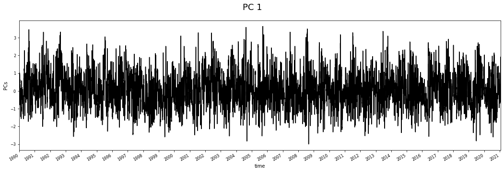
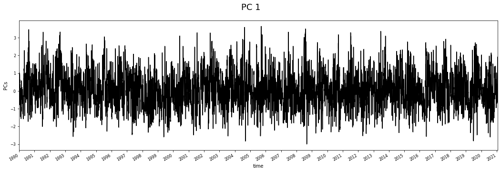

MultiLinear regression models
Contents
6. MultiLinear regression models¶
6.1. Linear regression theory¶
We assume here that \( y | X ; \theta\sim\mathcal{N}(\mu,\sigma ^2)\) !!
Normal equations - By noting \(X\) the design matrix, the value of \(\theta\) that minimizes the cost function is a closed-form solution such that:
Below, a sketch of how a linear regression model can be is seen:
{kind=link}
Fig. 6.1 This is a sketch of a linear model, where just one independent variable predicts the target variable Y, based on the Least squares method¶
# basics
import os, sys
import progressbar
# arrays
import numpy as np
import xarray as xr
# plotting
import matplotlib.pyplot as plt
import cartopy.crs as ccrs
# append sscode to path
import sys, os
sys.path.insert(0, '/Users/administrador/Documents/geocean-nz-ss')
data_path = '/Volumes/ToshibaJT/geocean-nz-ss/data'
os.environ["SSURGE_DATA_PATH"] = data_path
# custom
from sscode.config import data_path, default_region_reduced, \
default_evaluation_metrics, default_location
from sscode.data import Loader, load_moana_hindcast_ss, load_private_tgs
from sscode.utils import calculate_relative_winds
from sscode.pca import PCA_DynamicPred
from sscode.linear import MultiLinear_Regression
from sscode.plotting.utils import plot_ccrs_nz
from sscode.plotting.data import plot_uhslc_locations
# warnings
import warnings
warnings.filterwarnings('ignore')
# this is to allow plots to be centered
from IPython.core.display import HTML
HTML("""
<style>
.output_png {
display: table-cell;
text-align: center;
vertical-align: middle;
}
</style>
""")
DATA PATH /home/javitausia/Documentos/geocean-nz-ss/data
6.2. Load the data¶
As always, we load the three used datasets, which are the Moana v2 hindcast nearshore, the CFSR sea-level-pressure fields and winds (u10 and v10) and the UHSLC tgs validators, again setting the plot parameter to False.
# load the data
load_cfsr_moana_uhslc = Loader(
data_to_load=['cfsr','moana','uhslc'], plot=(False,False,False),
load_predictor_files=(True,
[data_path+'/cfsr/CFSR_MSLP_daily.nc',data_path+'/cfsr/CFSR_WINDs_daily.nc']
) # load previously calculated winds
)
loading previously saved atmospheric data from (True, ['/home/javitausia/Documentos/geocean-nz-ss/data/cfsr/CFSR_MSLP_daily.nc', '/home/javitausia/Documentos/geocean-nz-ss/data/cfsr/CFSR_WINDs_daily.nc'])
loading the Moana v2 hindcast data...
loading the UHSLC tidal guages...
6.3. Calculate regional PCA¶
Now, with the loaded data, we can calculate the regional PCs, so they can be used to reconstruct the storm surge all over New Zealand, using the same atmospheric predictor.
# load / calculate the regional pcs
pcs_data_regional, pcs_scaler_regional = PCA_DynamicPred(
load_cfsr_moana_uhslc.predictor_slp.SLP,
calculate_gradient=True,
time_lapse=1, # 1 equals to NO time delay
time_resample='1D', # daily resampling
region=(True,default_region_reduced),
pca_plot=(True,False,1),
pca_ttls=('SLP in t','Gradient in t'),
verbose=False
).pcs_get() # not needed now
6.4. Linear regression with regional predictor¶
In the following cell, a multilinear regression is performed over all the domain of the Moana v2 hindcast nearshore, having the regional pcs (slp + gradient) as the predictor. Moreover, we plot the obtained results, which are also saved in our data/statistics/linear folder, with the name stats_lm_regional_daily.nc.
Note
As it can be seen in the results plot, the different shores in New Zealand show very different results
run = False
if run:
# perform the Multilinear-Regression (regional)
metrics_regional = [] # save regional metrics
pcs_to_use_regional = [] # save used pcs (f-regression)
sites_regional = np.arange(
0,len(load_cfsr_moana_uhslc.predictand.site.values),1
)[::300]
# perform the MultiLinear regression over all the sites
for site in progressbar.progressbar(sites_regional):
ss_moana = load_cfsr_moana_uhslc.predictand.sel(site=site)\
.load().resample(time='1D').max()
metrics, model, pcs_to_use = MultiLinear_Regression(
pcs_data_regional, ss_moana, # use default attributes
verbose=False, plot_results=True
) # using the regional-pre-loaded pcs
metrics_regional.append(list(metrics.values())) # save site metrics
pcs_to_use_regional.append(pcs_to_use) # save used pcs
# now, save all in xarray.Dataset
sites_metrics_regional = {}
for im,metric in enumerate(metrics.keys()):
sites_metrics_regional[metric] = (('site'),np.array(metrics_regional)[:,im])
sites_metrics_regional['latitude'] = (
('site'),load_cfsr_moana_uhslc.predictand.sel(site=sites_regional).lat.values
)
sites_metrics_regional['longitude'] = (
('site'),load_cfsr_moana_uhslc.predictand.sel(site=sites_regional).lon.values
)
# save the metrics
metrics_dataset_regional = xr.Dataset(
sites_metrics_regional,coords={'site':sites_regional}
)
# local copys
if True:
metrics_dataset_regional.to_netcdf(
data_path+'/statistics/regional_models/stats_lm_regional_daily.nc'
) # save metrics in all the stations
np.save(
data_path+'/statistics/regional_models/pcs_lm_regional_daily.npy',
np.array(pcs_to_use_regional)
) # save pcs used in the linear regressions
else:
metrics_dataset_regional = xr.open_dataset(
data_path+'/statistics/regional_models/stats_lm_regional_daily.nc'
)
# plot results
if True:
from sscode.plotting.validation import plot_stats
plot_stats(metrics_dataset_regional,
plot_stats=['kgeprime','pearson','pocid'],
cmap='rainbow')

with the code below, we can plot the PCs used with the linear regression:
pcs_to_use_regional = np.load(
data_path+'/statistics/regional_models/pcs_lm_regional_daily.npy',
allow_pickle=True
)
max_pcs = max([np.max(array) for array in pcs_to_use_regional])
pcs_importance = np.zeros((len(pcs_to_use_regional),max_pcs))
for i,array in enumerate(pcs_to_use_regional):
for pc in range(max_pcs):
try:
pcs_importance[i,pc] = (max_pcs-np.where(array==pc)[0])/max_pcs
except:
continue
fig, ax = plt.subplots(figsize=(20,10))
pcol = ax.pcolor(pcs_importance.T[:50,:],cmap='Spectral')x
fig.colorbar(pcol)
# ax.set_yticks(np.arange(0,50,5)+0.5)
# ax.set_yticklabels(np.arange(0,50,5)+1,fontsize=16)
# ax.set_xticks(np.arange(20,len(pcs_to_use_regional))[::50]+0.5)
# ax.set_xticklabels(np.arange(
# 20,len(load_cfsr_moana_uhslc.predictand.site.values),1
# )[::50],fontsize=16)
# plt.setp(ax.get_xticklabels(),rotation=45,ha='right')
plt.show()
Tip
Images generated by code, as the one above, can be easily open in a new window with the right click, as they have all been generated with good quality for this particular purpose!!
6.5. Linear regression in the UHSLC tidal gauges + validation¶
Here, we really use for the first time our “validators”, which are the main truth in the project. In coastal engineering, we usually use the buoys (if we are working with waves) and the tidal gauges (water elevation) as the real observations, and once they are processed, which is the case of these nodes shown here, they might be used as the data to validate with.
Below, apart from plotting the location of the different tidal gauges that we will be working with, we show how the linear regression with the regional predictor behaves in the nearest locations to the tidal gauges, and how this pre-trained linear regression model performs in that tidal gauge too.
To understand how good or bad the linear model might behave when predicting the storm surge of the tidal guages, we find the answer in the validations we performed in the first notebook, called Data visualization and validation (data_visualization.ipynb), where the comparison of all the tidal gauges and the nearest moana nodes is shown.
Warning
This use of the pre-trained linear model with the moana nodes for the tidal gauges must be revised, as the distances between both locations might involve the appearance of new physical phenomena!! Moreover, model is calibrated with the hindcast, not with the TGs!!
# plot the uhslc tidal-gauges locations
plot_uhslc_locations(load_cfsr_moana_uhslc.validator)

Note
In this analysis, we use a local predictor with the projected winds, focused in the location studied
# validate model with tgs
stats = []
# select sites and append closest to UHSLC tgs
clos_to_uhslc = [689, 328, 393, 1327, 393, 480, 999, 116, 224, 1124, 949, 708]
sites_to_analyze = np.unique( # closest Moana v2 Hindcast to tidal gauges
[ 689,328,393,1327,393,480,999,116,224,1124,949,708, # UHSLC
1296,378,1124,780,613,488,1442,1217,578,200,1177,1025,689,949,224,1146, # LINZ
1174,1260,1217,744,1064,1214,803,999 # OTHER (ports...)
]
)
for istat,stat in enumerate(sites_to_analyze):
ss_moana = load_cfsr_moana_uhslc.predictand.sel(site=stat)\
.load().resample(time='1D').max()
metrics, model, pcs_to_use = MultiLinear_Regression(
PCA_DynamicPred(
load_cfsr_moana_uhslc.predictor_slp.SLP,
calculate_gradient=True, time_lapse=3,
wind=load_cfsr_moana_uhslc.predictor_wind,
site_location=(ss_moana.lon.values[0],ss_moana.lat.values[0]),
region=(True, (
ss_moana.lon.values[0]-2.5,
ss_moana.lon.values[0]+2.5,
ss_moana.lat.values[0]-2.5,
ss_moana.lat.values[0]+2.5
)),
site_id=stat,
pcs_folder=data_path+'/pcs_to_seb/',
pca_plot=(True,False,1), verbose=False,
pca_ttls=['SLP in t','Grad in t','Winds in t',
'SLP in t-1','Grad in t-1','Winds in t-1',
'SLP in t-2','Grad in t-2','Winds in t-2']
).pcs_get()[0],
ss_moana, percentage_PCs=0.98, plot_results=True, verbose=False,
model_metrics=default_evaluation_metrics, train_size=0.7,
# validator=(
# True,load_cfsr_moana_uhslc.validator.isel(name=istat),'ss'
# )
)
/home/javitausia/Documentos/geocean-nz-ss/data/pcs_to_seb/ ['local_2.5_2.5', '116', 'winds', 'gradients', '1D', 'tl3']
FILE /home/javitausia/Documentos/geocean-nz-ss/data/pcs_to_seb/local_2.5_2.5_116_winds_gradients_1D_tl3.nc
PCs loaded from file


/home/javitausia/Documentos/geocean-nz-ss/data/pcs_to_seb/ ['local_2.5_2.5', '200', 'winds', 'gradients', '1D', 'tl3']
FILE /home/javitausia/Documentos/geocean-nz-ss/data/pcs_to_seb/local_2.5_2.5_200_winds_gradients_1D_tl3.nc
PCs loaded from file


/home/javitausia/Documentos/geocean-nz-ss/data/pcs_to_seb/ ['local_2.5_2.5', '224', 'winds', 'gradients', '1D', 'tl3']
FILE /home/javitausia/Documentos/geocean-nz-ss/data/pcs_to_seb/local_2.5_2.5_224_winds_gradients_1D_tl3.nc
PCs loaded from file


/home/javitausia/Documentos/geocean-nz-ss/data/pcs_to_seb/ ['local_2.5_2.5', '328', 'winds', 'gradients', '1D', 'tl3']
FILE /home/javitausia/Documentos/geocean-nz-ss/data/pcs_to_seb/local_2.5_2.5_328_winds_gradients_1D_tl3.nc
PCs loaded from file


/home/javitausia/Documentos/geocean-nz-ss/data/pcs_to_seb/ ['local_2.5_2.5', '378', 'winds', 'gradients', '1D', 'tl3']
FILE /home/javitausia/Documentos/geocean-nz-ss/data/pcs_to_seb/local_2.5_2.5_378_winds_gradients_1D_tl3.nc
PCs loaded from file


/home/javitausia/Documentos/geocean-nz-ss/data/pcs_to_seb/ ['local_2.5_2.5', '393', 'winds', 'gradients', '1D', 'tl3']
FILE /home/javitausia/Documentos/geocean-nz-ss/data/pcs_to_seb/local_2.5_2.5_393_winds_gradients_1D_tl3.nc
PCs loaded from file


/home/javitausia/Documentos/geocean-nz-ss/data/pcs_to_seb/ ['local_2.5_2.5', '480', 'winds', 'gradients', '1D', 'tl3']
FILE /home/javitausia/Documentos/geocean-nz-ss/data/pcs_to_seb/local_2.5_2.5_480_winds_gradients_1D_tl3.nc
PCs loaded from file


/home/javitausia/Documentos/geocean-nz-ss/data/pcs_to_seb/ ['local_2.5_2.5', '488', 'winds', 'gradients', '1D', 'tl3']
FILE /home/javitausia/Documentos/geocean-nz-ss/data/pcs_to_seb/local_2.5_2.5_488_winds_gradients_1D_tl3.nc
PCs loaded from file


/home/javitausia/Documentos/geocean-nz-ss/data/pcs_to_seb/ ['local_2.5_2.5', '578', 'winds', 'gradients', '1D', 'tl3']
FILE /home/javitausia/Documentos/geocean-nz-ss/data/pcs_to_seb/local_2.5_2.5_578_winds_gradients_1D_tl3.nc
PCs loaded from file


/home/javitausia/Documentos/geocean-nz-ss/data/pcs_to_seb/ ['local_2.5_2.5', '613', 'winds', 'gradients', '1D', 'tl3']
FILE /home/javitausia/Documentos/geocean-nz-ss/data/pcs_to_seb/local_2.5_2.5_613_winds_gradients_1D_tl3.nc
PCs loaded from file


/home/javitausia/Documentos/geocean-nz-ss/data/pcs_to_seb/ ['local_2.5_2.5', '689', 'winds', 'gradients', '1D', 'tl3']
FILE /home/javitausia/Documentos/geocean-nz-ss/data/pcs_to_seb/local_2.5_2.5_689_winds_gradients_1D_tl3.nc
PCs loaded from file


/home/javitausia/Documentos/geocean-nz-ss/data/pcs_to_seb/ ['local_2.5_2.5', '708', 'winds', 'gradients', '1D', 'tl3']
FILE /home/javitausia/Documentos/geocean-nz-ss/data/pcs_to_seb/local_2.5_2.5_708_winds_gradients_1D_tl3.nc
PCs loaded from file

 

/home/javitausia/Documentos/geocean-nz-ss/data/pcs_to_seb/ ['local_2.5_2.5', '744', 'winds', 'gradients', '1D', 'tl3']
FILE /home/javitausia/Documentos/geocean-nz-ss/data/pcs_to_seb/local_2.5_2.5_744_winds_gradients_1D_tl3.nc
PCs loaded from file


/home/javitausia/Documentos/geocean-nz-ss/data/pcs_to_seb/ ['local_2.5_2.5', '780', 'winds', 'gradients', '1D', 'tl3']
FILE /home/javitausia/Documentos/geocean-nz-ss/data/pcs_to_seb/local_2.5_2.5_780_winds_gradients_1D_tl3.nc
PCs loaded from file


/home/javitausia/Documentos/geocean-nz-ss/data/pcs_to_seb/ ['local_2.5_2.5', '803', 'winds', 'gradients', '1D', 'tl3']
FILE /home/javitausia/Documentos/geocean-nz-ss/data/pcs_to_seb/local_2.5_2.5_803_winds_gradients_1D_tl3.nc
PCs loaded from file


/home/javitausia/Documentos/geocean-nz-ss/data/pcs_to_seb/ ['local_2.5_2.5', '949', 'winds', 'gradients', '1D', 'tl3']
FILE /home/javitausia/Documentos/geocean-nz-ss/data/pcs_to_seb/local_2.5_2.5_949_winds_gradients_1D_tl3.nc
PCs loaded from file


/home/javitausia/Documentos/geocean-nz-ss/data/pcs_to_seb/ ['local_2.5_2.5', '999', 'winds', 'gradients', '1D', 'tl3']
FILE /home/javitausia/Documentos/geocean-nz-ss/data/pcs_to_seb/local_2.5_2.5_999_winds_gradients_1D_tl3.nc
PCs loaded from file


/home/javitausia/Documentos/geocean-nz-ss/data/pcs_to_seb/ ['local_2.5_2.5', '1025', 'winds', 'gradients', '1D', 'tl3']
FILE /home/javitausia/Documentos/geocean-nz-ss/data/pcs_to_seb/local_2.5_2.5_1025_winds_gradients_1D_tl3.nc
PCs loaded from file


/home/javitausia/Documentos/geocean-nz-ss/data/pcs_to_seb/ ['local_2.5_2.5', '1064', 'winds', 'gradients', '1D', 'tl3']
FILE /home/javitausia/Documentos/geocean-nz-ss/data/pcs_to_seb/local_2.5_2.5_1064_winds_gradients_1D_tl3.nc
PCs loaded from file


/home/javitausia/Documentos/geocean-nz-ss/data/pcs_to_seb/ ['local_2.5_2.5', '1124', 'winds', 'gradients', '1D', 'tl3']
FILE /home/javitausia/Documentos/geocean-nz-ss/data/pcs_to_seb/local_2.5_2.5_1124_winds_gradients_1D_tl3.nc
PCs loaded from file


/home/javitausia/Documentos/geocean-nz-ss/data/pcs_to_seb/ ['local_2.5_2.5', '1146', 'winds', 'gradients', '1D', 'tl3']
FILE /home/javitausia/Documentos/geocean-nz-ss/data/pcs_to_seb/local_2.5_2.5_1146_winds_gradients_1D_tl3.nc
PCs loaded from file


/home/javitausia/Documentos/geocean-nz-ss/data/pcs_to_seb/ ['local_2.5_2.5', '1174', 'winds', 'gradients', '1D', 'tl3']
FILE /home/javitausia/Documentos/geocean-nz-ss/data/pcs_to_seb/local_2.5_2.5_1174_winds_gradients_1D_tl3.nc
PCs loaded from file


/home/javitausia/Documentos/geocean-nz-ss/data/pcs_to_seb/ ['local_2.5_2.5', '1177', 'winds', 'gradients', '1D', 'tl3']
FILE /home/javitausia/Documentos/geocean-nz-ss/data/pcs_to_seb/local_2.5_2.5_1177_winds_gradients_1D_tl3.nc
PCs loaded from file


/home/javitausia/Documentos/geocean-nz-ss/data/pcs_to_seb/ ['local_2.5_2.5', '1214', 'winds', 'gradients', '1D', 'tl3']
FILE /home/javitausia/Documentos/geocean-nz-ss/data/pcs_to_seb/local_2.5_2.5_1214_winds_gradients_1D_tl3.nc
PCs loaded from file


/home/javitausia/Documentos/geocean-nz-ss/data/pcs_to_seb/ ['local_2.5_2.5', '1217', 'winds', 'gradients', '1D', 'tl3']
FILE /home/javitausia/Documentos/geocean-nz-ss/data/pcs_to_seb/local_2.5_2.5_1217_winds_gradients_1D_tl3.nc
PCs loaded from file


/home/javitausia/Documentos/geocean-nz-ss/data/pcs_to_seb/ ['local_2.5_2.5', '1260', 'winds', 'gradients', '1D', 'tl3']
FILE /home/javitausia/Documentos/geocean-nz-ss/data/pcs_to_seb/local_2.5_2.5_1260_winds_gradients_1D_tl3.nc
PCs loaded from file


/home/javitausia/Documentos/geocean-nz-ss/data/pcs_to_seb/ ['local_2.5_2.5', '1296', 'winds', 'gradients', '1D', 'tl3']
FILE /home/javitausia/Documentos/geocean-nz-ss/data/pcs_to_seb/local_2.5_2.5_1296_winds_gradients_1D_tl3.nc
PCs loaded from file


/home/javitausia/Documentos/geocean-nz-ss/data/pcs_to_seb/ ['local_2.5_2.5', '1327', 'winds', 'gradients', '1D', 'tl3']
FILE /home/javitausia/Documentos/geocean-nz-ss/data/pcs_to_seb/local_2.5_2.5_1327_winds_gradients_1D_tl3.nc
PCs loaded from file


/home/javitausia/Documentos/geocean-nz-ss/data/pcs_to_seb/ ['local_2.5_2.5', '1442', 'winds', 'gradients', '1D', 'tl3']
FILE /home/javitausia/Documentos/geocean-nz-ss/data/pcs_to_seb/local_2.5_2.5_1442_winds_gradients_1D_tl3.nc
PCs loaded from file